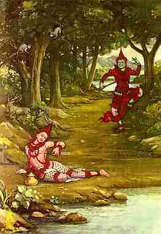

|

|
เรื่องย่อ
����������������
ชาดกเรื่องนี้แสดงถึงการบำเพ็ญเมตตาบารมี
คือการแผ่ไมตรีจิตคิดจะให้สัตว์ทั้งปวงเป็นสุขทั่วหน้า มีเรื่องเล่าว่า
สุวรรณสามเลี้ยงมารดาบิดาของตนซึ่งเสียจักษุในป่า และเนื่องจากเป็นผู้เมตตาปรารถนาดีต่อผู้อื่น
หมู่เนื้อก็เดินตามแวดล้อมไปในที่ต่างๆ วันหนึ่งถูกพระเจ้ากรุงพาราณสีชื่อปิลยักษ์ยิงเอาด้วยธนูด้วยเข้าพระทัยผิด
ภายหลังเมื่อทราบว่าเป็นมาณพผู้เลี้ยงมารดาบิดา ก็สลดพระทัย
จึงไปจูงมารดาบิดาของสุวรรณสามมา. มารดาบิดาของสุวรรณสามก็ตั้งสัจจกิริยา
อ้างคุณความดีของสุวรรณสามของให้พิษของศรหมดไป สุวรรณสามก็ฟื้นคืนสติ
และได้สอนพระราชา แสดงคติธรรมว่า ผู้ใดเลี้ยงมารดาบิดาโดยธรรฒ
แม้เทวดาก็ย่อมรักษาผู้นั้น ย่อมมีคนสรรเสริญในโลกนี้ ละโลกนี้ไปแล้วก็บันเทิงในสวรรค์
ต่อจากนั้นเมื่อพระราชาขอให้สั่งสอนต่อไปอีก ก็สอนให้ทรงปฏิบัติธรรมปฏิบัติชอบในบุคคลทั้งปวง
|
|
เรื่องราวในชาดกโดยย่อ
����������������
สุวรรณสามชาดก ครั้งหนึ่ง มีสหายสองคนรักใคร่กันมาก ต่างก็ตั้งบ้านเรือน
อยู่ใกล้เคียงกัน ไปมาหาสู่กันอยู่เสมอ ทั้งสองคนตั้งใจว่า ถ้าฝ่ายหนึ่งมีลูกสาว
อีกฝ่ายหนึ่งมีลูกชาย ก็จะให้แต่งงาน เพื่อครอบครัวทั้งสองฝ่ายจะได้
ผูกพันใกล้ชิดกันไม่มีเสื่อมคลาย อยู่ต่อมาฝ่ายหนึ่งก็มีลูกชายชื่อว่า
ทุกูลกุมาร อีกฝ่ายหนึ่งมีลูกสาว ชื่อว่า ปาริกากุมารี เด็กทั้งสองมีรูป
ร่างหน่าตางดงาม สติปัญญาฉลาดเฉลียว และมีจิตใจมั่นอยู่ในศีล
เมื่อเติบโตขึ้น พ่อแม่ของทั้งสองก็ตกลงจะทำตามที่เคย ตั้งใจไว้
คือให้ลูกของทั้งสองบ้านได้แต่งงานกัน แต่ทั้งทุกูลกุมารและปาริกากุมารี
ต่างบอกกับพ่อแม่ ของตนว่า ไม่ต้องการแต่งงานกัน แม้จะรู้ดีว่า
ฝ่ายหนึ่ง เป็นคนดี รูปร่างหน้าตางดงาม และเป็นเพื่อนสนิท มาตั้งแต่เด็กก็ตาม
���������������� ในที่สุด พ่อแม่ของทั้งสองก็จัดการแต่งงานให้จนได้
แต่แม้ว่าทุกูลและปาริกาจะแต่งงานกันแล้ว ต่างยังคงประพฤติ ปฏิบัติเสมือนเป็นเพื่อนกันตลอดมา
ไม่เคยประพฤติต่อกัน ฉันสามีภรรยา ยิ่งไปกว่านั้นทั้ง สองคนมีความปราถนาตรงกัน
คือประสงค์จะออกบวช ไม่อยากดำเนินชีวิตอย่างชาวบ้าน ธรรมดาซึ่ง
จะต้องพัวพันอยู่กับการฆ่าสัตว์ตัดชีวิต เพื่อเป็นอาหารบ้าง
เพื่อป้องกันตัวเองบ้าง เมื่อได้อ้อนวอนพ่อแม่ทั้งสองบ้านอยู่เป็นเวลานาน
ในที่สุด ทั้งสองก็ได้รับคำอนุญาตให้บวชได้ จึงพากัน เดินทางไปสู่ป่าใหญ่
และอธิษฐานออกบวช นุ่งห่มผ้าย้อม เปลือกไม้และไว้มวยผมอย่างดาบส
บำเพ็ญ ธรรมอยู่ ณ ศาลาในป่านั้น ด้วยความเมตตาอันมั่นคง ของทั้งสองคน
บรรดาสิงสาราสัตว์ที่อาศัยอยู่ในบริเวณนั้น ต่างก็มีเมตตาจิตต่อกัน
ไม่ทำร้ายซึ่งกันและกัน ต่างหากินอยู่ด้วยความสุขสำราญ
���������������� ต่อมาวันหนึ่ง
พระอินทร์เล็งเห็นอันตรายซึ่งจะบังเกิดแก่ ทุกูลดาบสและปาริกาดาบสินี
จึงตรัสบอกแก่ ดาบสว่า "ข้าพเจ้าเล็งเห็นว่า อันตรายจะเกิดขึ้นแก่ท่าน
ขอให้ท่านจงมีบุตร เพื่อเป็น ผู้ช่วยเหลือ ปรนนิบัติในยามยากลำบากเถิด"
ทุกูลดาบสจึงถามว่า "อาตมาบำเพ็ญพรตเพื่อความพ้นทุกข์ อาตมาจะมีบุตรได้อย่างไร
อาตมาไม่ต้องการดำเนินชีวิต อย่างชาวโลก ที่จะทำให้ต้องวนเวียนอยู่ในความทุกข์อีก"
���������������� พระอินทร์ตรัสว่า
"ท่านไม่จำเป็นต้องประพฤติปฏิบัติ อย่างชาวโลก แต่ท่านจำเป็นต้องมีบุตรไว้ช่วย
เหลือปรนนิบัติ ขอให้เชื่อข้าพเจ้าเถิด ท่านเพียงแต่เอามือลูบท้องนางปาริกา
ดาบสินี นางก็จะตั้งครรภ์ ลูกในครรภ์นางจะได้เป็นผู้ดูแล ท่านทั้งสองต่อไป"
���������������� เมื่อพระอินทร์ตรัสบอกดังนั้น
ทุกูลดาบสจึงทำตาม ต่อมานางปาริกาก็ตั้งครรภ์ ครั้นครบกำหนด
ก็คลอดบุตร มีผิวพรรณงดงามราวทองคำบริสุทธิ์ จึงได้ชื่อว่า "สุวรรณสาม"
ปาริกาดาบสสินี เลี้ยงดู สุวรรณสามจนเติบใหญ่อยู่ในป่านั้น มีบรรดาสัตว์น้อยใหญ่นานาชนิดแวดล้อมเป็นเพื่อนเล่น
ตั้งแต่ยังเป็นเด็กอยู่ สุวรรณสามหมั่นสังเกตจดจำสิ่งที่ พ่อและแม่ได้ปฏิบัติ
เช่น การไปตักน้ำ ไปหา ผลไม้เป็นอาหาร เส้นทางที่ไปหาน้ำและอาหาร
สุวรรณสามพยายามช่วยเหลือ พ่อและแม่ กระทำกิจกรรมต่างๆ เท่าที่จะทำได้
เพื่อให้พ่อแม่ ได้มีเวลาบำเพ็ญธรรมตามที่ประสงค์
���������������� วันหนึ่ง เมื่อทุกูลดาบสและนางปาริกา
ออกไปหาผลไม้ในป่า เผอิญฝนตกหนักทั้งสองจึงหลบฝนอยู่ที่ ต้นไม้ใหญ่ใกล้
จอมปลวก โดยไม่รู้ว่าที่จอมปลวกนั้นมีงูพิษอาศัยอยู่ น้ำฝนที่ชุ่มเสื้อฝ้า
และมุ่นผมของ ทั้งสองไหลหยดลงไปในรูงู งูตกใจจึงพ่นพิษออกมาป้องกันตัว
พิษร้ายของงูเข้าตาทั้งสองคน ความร้ายกาจของพิษทำให้ดวงตาบอดมืดมิดไปทันที
ทุกูลดาบสและนางปาริกาดาบสินี จึงไม่สามารถจะกลับไปถึง ศาลาที่พักได้
เพราะมองไม่เห็นทาง ต้องวนเวียนคลำทางอยู่แถวนั้นเอง คนทั้งสองต้องเสียดวงตา
เพราะกรรมในชาติก่อน เมื่อครั้งที่ ทุกูลดาบสเกิดเป็นหมอรักษาตา
ปาริกา เกิดเป็นภรรยาของหมอนั้น วันหนึ่งหมอได้รักษาตาของเศรษฐีคนหนึ่งจนหายขาดแล้ว
แต่เศรษฐีไม่ยอมจ่ายค่ารักษา ภรรยาจึงบอกกับสามีว่า "พี่จงทำยาขึ้นอย่างหนึ่งให้มีฤทธิ์แรง
แล้วเอาไปให้เศรษฐีผู้นั้น บอกว่าตายังไม่หายสนิท ขอให้ใช้ยานี้ป้ายอีก"
หมอตาทำตามที่ภรรยาบอก ฝ่ายเศรษฐีเชื่อในสรรพคุณยา ของหมอ ก็ทำตาม
ตาของเศรษฐีก็กลับบอด สนิทในไม่ช้าด้วย บาปที่ทำไว้ในชาติก่อน
ส่งผลให้ทั้งสองคนต้องตาบอดไปในชาตินี้
���������������� ฝ่ายสุวรรณสาม
คอยพ่อแม่อยู่ที่ศาลา ไม่เห็นกลับมาตามเวลา จึงออกเดินตามหา
ในที่สุดก็พบพ่อแม่ วนเวียนอยู่ข้างจอมปลวก เพราะนัยน์ตาบอด
หาทางกลับไม่ได้ สุวรรณสามจึงถามว่า เกิดอะไรขึ้น เมื่อพ่อแม่เล่าให้ฟัง
สุวรรณสามก็ร้องไห้ แล้วก็หัวเราะ พ่อแม่จึงถามว่าเหตุใดจึงร้องไห้แล้วก็หัวเราะ
เช่นนั้น สุวรรณสาม ตอบว่า "ลูกร้องไห้เพราะเสียใจที่พ่อแม่นัยน์ตาบอด
แต่หัวเราะ เพราะลูกดีใจที่ลูกจะได้ ปรนนิบัติดูแล ตอบแทนพระคุณพ่อแม่
ที่เลี้ยงดูลูกมา พ่อแม่อย่าเป็นทุกข์ไปเลย ลูกจะปรนนิบัติ ไม่ให้พ่อแม่ต้องเดือดร้อนแต่อย่างใด"
���������������� จากนั้น สุวรรณสามก็พาพ่อแม่กลับไปยังศาลาที่พัก
จัดหาเชือก มาผูกโยงไว้โดยรอบ สำหรับพ่อแม่จะได้ใช้จับเป็นราวเดินไป
ทำอะไรๆ ได้สะดวกในบริเวณศาลานั้นทุกๆ วัน สุวรรณสาม จะไปตักน้ำมา
สำหรับพ่อแม่ได้ดื่มได้ใช้ และไปหา ผลไม้ในป่ามาเป็นอาหารและตนเอง
เวลาที่สุวรรณสามออกป่าหาผลไม้ บรรดาสัตว์ทั้งหลาย จะพากันมาแวดล้อมด้วยความไว้วางใจ
เพราะสุวรรณสาม เป็นผู้มีเมตตาจิต ไม่เคยทำอันตรายแก่ฝูงสัตว์
สุวรรณสามจึงมีเพื่อนแวดล้อมเป็นบรรดา สัตว์นานาชนิด พ่อแม่ลูกทั้งสามจึงมีแต่ความสุขสงบ
ปราศจาก ความทุกข์ร้อนวุ่นวายทั้งปวง
���������������� อยู่มาวันหนึ่ง
พระราชาแห่งเมืองพาราณสี พระนามว่า "กบิลยักขราช"
เป็นผู้ชอบออกป่าล่าสัตว์ พระองค์เสด็จออกล่าสัตว์ มาจนถึงท่าน้ำที่สุวรรณสามมาตักน้ำไปให้พ่อแม่
พระราชาสังเกตเห็น รอยเท้า สัตว์ชุกชุมในบริเวณนั้น จึงซุ่มคอยจะยิงสัตว์ที่ผ่านมากินน้ำ
���������������� ขณะนั้น สุวรรณสามนำหม้อน้ำมาตักน้ำไปใช้ที่ศาลาดังเช่นเคย
มีฝูงสัตว์เดินตามมาด้วยมากมาย พระราชาทอดพระเนตรเห็น ก็ทรงแปลกพระทัยว่า
สุวรรณสามเป็นมนุษย์หรือเทวดา เหตุใดจึง เดินมา กับฝูงสัตว์
ครั้นจะเข้าไปถามก็เกรงว่าสุวรรณสาม จะตกใจหนีไป ก็จะไม่ได้ตัวจึงคิดจะยิงด้วยธนูให้หมด
กำลังก่อนแล้วค่อยจับตัวไว้ซักถาม เมื่อสุวรรณสามลงไปตักน้ำแล้ว
กำลังจะเดินกลับไปศาลา
���������������� พระราชากบิลยักขราชก็เล็งยิงด้วยธนูอาบยา
ถูกสุวรรณสาม ที่สำตัวทะลุจากขวาไปซ้าย สุวรรณสามล้มลงกับพื้น
แต่ยังไม่ถึงตาย จึงเอ่ยขึ้นว่า "เนื้อของเรากินไม่ได้
หนังของเราเอาไปทำอะไรก็ไม่ได้ จะยิงเราทำไม คนที่ยิงเราเป็นใคร
ยิงแล้วจะ ซ่อนตัวอยู่ทำไม" กบิลยักขราชได้ยินวาจาอ่อนหวานเช่นนั้นก็ยิ่งแปลกพระทัย
ทรงคิดว่า "หนุ่มน้อยนี้เป็นใครหนอ ถูกเรายิงล้มลงแล้ว
ยังไม่โกรธเคือง กลับใช้ถ้อยคำอันอ่อนหวาน แทนที่จะด่าว่า ด้วยความ
โกรธแค้น เราจะต้องแสดงตัวให้เขาเห็น" คิดดังนั้นแล้ว พระราชาจึงออกจากที่ซุ่มไปประทับอยู่ข้างๆ
สุวรรณสาม พลางตรัสว่า "เราชื่อกบิลยักขราช เป็นพระราชา
แห่งแมืองพาราณสี เจ้าเป็นผู้ใด มาทำอะไรอยู่ในป่านี้"
สุวรรณสามตอบไปตามความจริงว่า "ข้าพเจ้าเป็นบุตรดาบส ชื่อว่าสุวรรณสาม
พระองค์ยิงข้าพเจ้าด้วยธนูพิษ ได้รับ ความเจ็บปวดสาหัส พระองค์ประสงค์อะไรจึงยิงข้าพเจ้า"
���������������� พระราชาไม่กล้าตอบความจริง
จึงแสร้งตรัสเท็จว่า "เราตั้งใจจะยิงเนื้อเป็นอาหาร แต่พอเจ้ามาเนื้อก็
เตลิดหนีไปหมด เราโกรธจึงยิงเจ้า " สุวรรณสามแย้งว่า "เหตุใดพระองค์จึงตรัสอย่างนั้น
บรรดาสัตว์ทั้งหลายในป่านี้ไม่เคยกลัวข้าพเจ้า ไม่เคยเตลิด หนีข้าพเจ้าเลย
สัตว์ทั้งหลายเป็นเพื่อนของข้าพเจ้า" พระราชาทรงละอายพระทัยที่ตรัสความเท็จแก่สุวรรณสาม
ผู้ถูกยิงโดยปราศจากความผิด จึงตรัสตามความจริงว่า "เป็นความจริงตามที่เจ้าว่า
สัตว์ทั้งหลายมิได้กลัวภัย จากเจ้าเลย เรายิงเจ้าก็เพราะความโง่เขลาของเราเอง
เจ้าอยู่กับใครในป่านี้ ออกตักน้ำไปให้ใคร"
���������������� สุวรรณสามบ้วนโลหิตออกจากปาก
ตอบพระราชาว่า "ข้าพเจ้าอยู่กับพ่อแม่ ซึ่งตาบอดทั้งสองคน
อยู่ในศาลา ในป่านี้ ข้าพเจ้าทำหน้าที่ปรนนิบัติพ่อแม่ ดูแลหาน้ำและอาหาร
สำหรับท่านทั้งสอง เมื่อข้าพเจ้า มาถูกยิงเช่นนี้ พ่อแม่ก็จะไม่มี
ใครดูแลปรนนิบัติอีกต่อไป อาหารที่ศาลายังพอสำหรับ 6 วัน แต่ไม่มีน้ำ
พ่อแม่ของข้าพเจ้าจะต้องอดน้ำและอาหาร เมื่อปราศจากข้าพเจ้า
โอ พระราชา ความทุกข์ ความเจ็บปวด ที่เกิดจากถูกยิงด้วยธนูของท่านนั้น
ยังไม่เท่าความทุกข์ ความเจ็บปวดที่เป็นห่วงพ่อแม่ของข้าพเจ้า
จะต้องได้รับ ความเดือดร้อนเพราะขาดข้าพเจ้าผู้ปรนนิบัติ ต่อไปนี้พ่อแม่คงไม่ได้เห็นหน้าข้าพเจ้าอีก
แล้ว"
���������������� สุวรรณสามรำพันแล้วร้องไห้ด้วยความทุกข์ใจอย่างยิ่ง
พระราชาทรงได้ยินดังนั้นก็เสียพระทัยยิ่งนักว่า ได้ทำร้าย สุวรรณสามผู้มีความกตัญญูสูงสุด
ผู้ไม่เคยทำอันตราย ต่อสิ่งใดเลย จึงตรัสกับสุวรรณสามว่า "ท่านอย่ากังวลไปเลย
สุวรรณสาม เราจะรับดูแลปรนนิบัติพ่อแม่ของท่านให้เหมือน กับที่ท่านได้เคย
ทำมา จงบอกเราเถิดว่าพ่อแม่ของท่านอยู่ที่ไหน" สุวรรณสามได้ยินพระราชาตรัสให้สัญญาก็ดีใจ
กราบทูลว่า "พ่อแม่ของข้าพเจ้าอยู่ไม่ไกลจากที่นี่มาก นัก
ขอเชิญเสด็จไปเถิด" พระราชาตรัสถามว่า สุวรรณสามจะสั่งความไปถึงพ่อแม่
บ้างหรือไม่ สุวรรณสามจึงขอให้พระราชาบอกพ่อแม่ว่า ตนฝากกราบไหว้ลาพ่อแม่มากับพระราชา
เมื่อสุวรรณสาม ประนมมือกราบลงแล้ว ก็สลบไป ด้วยธนูพิษ ลมหายใจหยุด
มือเท้าและร่างกายแข็งเกร็งด้วยพิษยา
���������������� พระราชาทรงเศร้า
เสียพระทัยยิ่งนัก รำลึกถึงกรรมอันหนักที่ได้ก่อขึ้นในครั้งนี้
แล้วก็ทรงระลึกได้ว่า ทางเดียวที่จะช่วยผ่อนบาปอันหนักของ พระองค์ได้ก็คือ
ปฏิบัติตามวาจาที่สัญญาไว้กับสุวรรณสาม คือไป ปรนนิบัติดูแลพ่อแม่สุวรรณสาม
เหมือนที่สุวรรณสามได้เคยกระทำมา พระราชากบิลยักขราชจึงนำหม้อน้ำที่สุวรรณสามตักไว้นั้น
ออกเดินทางไปศาลาที่สุวรรณสามบอกไว้ ครั้นไปถึง ทุกูลดาบสได้ยินเสียงฝีเท้าพระราชา
ก็ร้องถามขึ้นว่า "นั่นใครขึ้นมา ไม่ใช่สุวรรณสามลูกเราแน่
ลูกเรา เดินฝีเท้าเบา ไม่ก้าวหนักอย่างนี้" พระราชาไม่กล้าบอกไปในทันทีว่าพระองค์ยิงสุวรรณสาม
ตายแล้ว จึงบอกแต่เพียงว่า "ข้าพเจ้าเป็นพระราชา แห่งเมืองพาราณสี
มาเที่ยวยิงเนื้อในป่านี้" ดาบสจึงเชิญ ให้พระราชาเสวยผลไม้
และเล่าว่าบุตรชายชื่อสุวรรณสาม เป็นผู้ดูแลจัดหาอาหารไว้ให้
ขณะนี้สุวรรณสาม ออกไปตักน้ำ อีกสักครู่ก็คงจะกลับมา
���������������� พระราชาจึงตรัสด้วยความเศร้าเสียพระทัยว่า
"สุวรรณสาม ไม่กลับมาแล้ว บัดนี้สุวรรณสามถูกธนูของ ข้าพเจ้าถึงแก่
ความตายแล้ว" ดาบสทั้งสองได้ยินดังนั้นก็เสียใจยิ่งนัก
นางปาริกาดาบสินีนั้นแต่แรกโกรธ แค้นที่พระราชา ยิงสุวรรณสามตาย
แต่ทุกูลดาบสได้ปลอบประโลมว่า "จงนึกว่าเป็นเวรกรรมของสุวรรณสามและของเราทั้งสองเถิด
จงสำรวมจิตอย่าโกรธเคืองเลย พระราชาก็ได้ยอมรับผิดแล้ว"
พระราชาตรัสปลอบว่า "ท่านทั้งสองอย่ากังวลไปเลย ข้าพเจ้าได้สัญญากับสุวรรณสามแล้วว่าจะปรนนิบัติ
ท่านทั้งสองให้เหมือนกับที่สุวรรณสามเคยทำมาทุกประการ"
ดาบสทั้งสองอ้อนวอนพระราชาให้พาไปที่สุวรรณสาม นอนตายอยู่ เพื่อจะได้สัมผัสลูบคลำลูกเป็นครั้งสุดท้าย
พระราชาก็ทรงพาไป
���������������� ครั้นถึงที่สุวรรณสามนอนอยู่
ปาริกาดาบสินีก็ช้อนเท่าลูกขึ้นวางบนตัก ทุกูลดาบส ก็ช้อนศีรษะสุวรรณสามประคองไว้บนตัก
ต่างพากัน รำพันถึงสุวรรณสามด้วยความโศกเศร้า บังเอิญปาริกา
ดาบสินีลูบคลำบริเวณหน้าอกสุวรรณสาม รู้สึกว่ายังอบอุ่นอยู่
จึงคิดว่าลูกอาจจะเพียงแต่ สลบไป ไม่ถึงตาย นางจึงตั้ง สัตยาธิษฐานว่า
"สุวรรณสามลูกเราเป็นผู้ที่ประพฤติดีตลอดมา มีความกตัญญูกตเวทีต่อพ่อแม่อย่างยิ่ง
เรารักสุวรรณสาม ยิ่งกว่าชีวิตของเราเอง ด้วยสัจจวาจาของเรานี้
ขอให้พิษ ธนูจงคลายไปเถิด ด้วยบุญกุศลที่สุวรรณสามได้เลี้ยงดู
พ่อแม่ตลอดมา ขออานุภาพแห่งบุญจงดล บันดาลให้ สุวรรณสามฟื้นขึ้นมาเถิด"
เมื่อนางต้งสัตยาธิษฐานจบ สุวรรณสามก็พลิกกายไป ข้างหนึ่งแต่ยังนอนอยู่
ทุกูลดาบสจึงตั้งสัตยาธิษฐาน เช่นเดียวกัน สุวรรณสามก็พลิกกายกลับไปอีกข้างหนึ่ง
���������������� ฝ่ายนางเทพธิดาวสุนธรี
ผู้ดูแลรักษาอยู่ ณ บริเวณ เขาคันธมาทน์ ก็ได้ตั้งสัตยาธิษฐานว่า
"เราทำหน้าที่รักษาเขาคันธมาทน์มาเป็นเวลานาน เรารักสุวรรณสาม
ผู้มีเมตตาจิต และมีความกตัญญูยิ่งกว่าใคร ด้วยสัจจวาจานี้ ขอให้พิษจงจางหายไปเถิด"
���������������� ทันใดนั้น สุวรรณสามก็พลิกกายฟื้นตื่นขึ้น
หายจาก พิษธนูโดยสิ้นเชิง ยิ่งกว่านั้นดวงตาของพ่อและแม่ของสุวรรณสามก็กลับแลเห็นเหมือนเดิม
พระราชา ทรงพิศวงยิ่งนัก จึงตรัสถามว่าสุวรรณสามฟื้นขึ้นมา ได้อย่างไร
สุวรรณสามตอบพระราชาว่า "บุคคลใดเลี้ยงดูปรนนิบัติบิดามารดาด้วยความรักใคร่เอาใจใส่
เทวดาและมนุษย์ย่อมช่วยคุ้มครองบุคคลนั้น นักปราชญ์ย่อม สรรเสริญ
แม้เมื่อตายไปแล้ว บุคคลนั้นก็จะได้ไปบังเกิด ในสวรรค์ เสวยผลบุญแห่งความกตัญญูกตเวทีของตน"
���������������� พระราชากบิลยักขราชได้ยินดังนั้นก็ชื่นชมโสมนัสตรัสกับ
สุวรรณสามว่า "ท่านทำให้จิตใจและดวงตาของ ข้าพเจ้า สว่างไสว
ข้าพเจ้ามองเห็นธรรม ต่อนี้ไป ข้าพเจ้าจะรักษาศีล จะบำเพ็ญกุศลกิจ
จะไม่เบียด เบียนชีวิตสัตว์อีกแล้ว" ตรัสปฏิญญาณแล้วพระราชาก็ทรงขอขมาโทษที่ได้กระทำ
ให้สุวรรณสามเดือดร้อน แล้วพระองค์ก็เสด็จ กลับพาราณสี ทรงปฏิบัติตามที่ได้ตรัสไว้ทุกประการจนตลอดพระชนม์ชีพ
���������������� ฝ่ายสุวรรณสามก็เลี้ยงดูปรนนิบัติพ่อแม่
บำเพ็ญเพียรใน ทางธรรมเมื่อสิ้นชีพก็ได้ไปเกิดในพรหมโลก ร่วมกับพ่อแม่
ด้วยกุศลกรรมที่กระทำมาคือ ความเมตตากรุณาต่อมนุษย์ และสัตว์ทั้งหลาย
และความกตัญญูกตเวทีต่อบิดามารดา อันเป็นกุศลกรรมสูงสุดที่บุตรพึงกระทำต่อบิดามารดา
|
|
คติธรรม
: บำเพ็ญเมตตาบารมี
����������������
ว่าด้วยเรื่องของความมีเมตตาจิต
ซึ่งจะทำให้ชีวิตสุขสงบได้โดยไร้ภยันอันตรายใดๆ เมตตาธรรมคือเกราะแก้วมิให้ถูกผู้ใดทำร้ายถึงแม้จะตกอยู่ในภาวะคับขันก็ย่อมจะแคล้วคลาดปลอดภัย
|
--------------------------------------------------------------------------------

กลับหน้าแรก
กลับไปหน้า
Web วัดท่าไทร
ไป
Web วิทยุชุมชนตำบลท่าทองใหม่
|